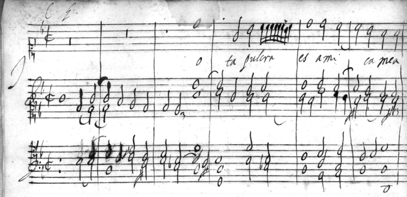

This program can be done with one singer and organ only, up to six musicians.
The Carlo G Manuscript was discovered recently in a Viennese flee market. This sensational discovery reveals a collection of 17th Century music, previously lost, with highly virtuosic music for two female voices with instrument accompaniment. The composer Carlo G’s identity has remained a mystery.
Music by: Giulio Caccini, Carlo G, Luca Marenzio, Paolo Quagliati